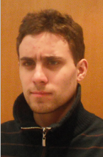

PÁGINA PESSOAL

Informações Gerais
Nome: Renan de Matos Casaca
Endereço: Rua Índio Condá 151-E
Naturalidade: Chapecó - SC
Instituição: Universidade Federal da Fronteira Sul - UFFS
E-mail: renan.casaca@uffs.edu.br
Informações do Curso
Título: Bacharel em Ciência da Computação
Carga Horária: 3090 Horas
Componentes Curriculares: 47
Créditos Totais: 206
Trabalhos realizados
Alguns trabalhos realizados durante o curso.
Teoria de Amostragem: Levantamento e cálculo de dados através da teoria da amostragem (Probabilidade e Estatística).
Máquina de Estados: Criação de uma máquina de estados e utilização de software. (Sistemas Digitais).
Dissertação: Sobre as visões de Marshall e Saes a respeito dos direitos civis, políticos e sociais. (Direito e Cidadania)
Interesses
Programação: Programação orientada a objeto.
Redes: Configuração e monitoramento de rede de computadores.
Segurança da Informação: Criptografia de dados.
Sistemas Operacionais: Funcionamento dos processos.